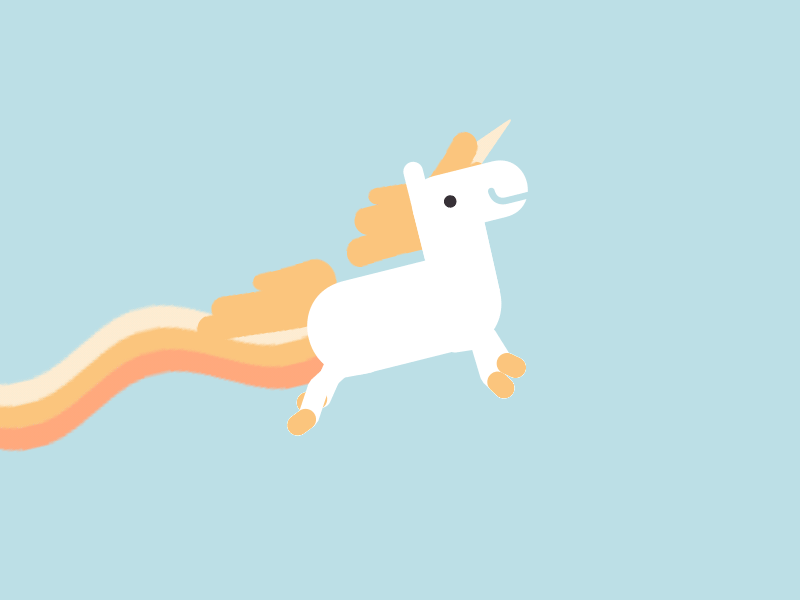

Hello! My name is Shirley, and I am a UI/UX Designer
who just spent the past six months as a digital nomad remotely designing for start-ups around the world while traveling in Japan and China. I focus in user interface, experience, and interaction design, and am aspiring to become a full-stack UX unicorn. Thanks for stopping by!